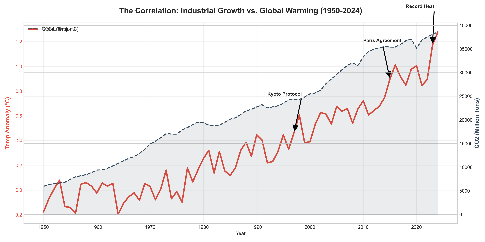
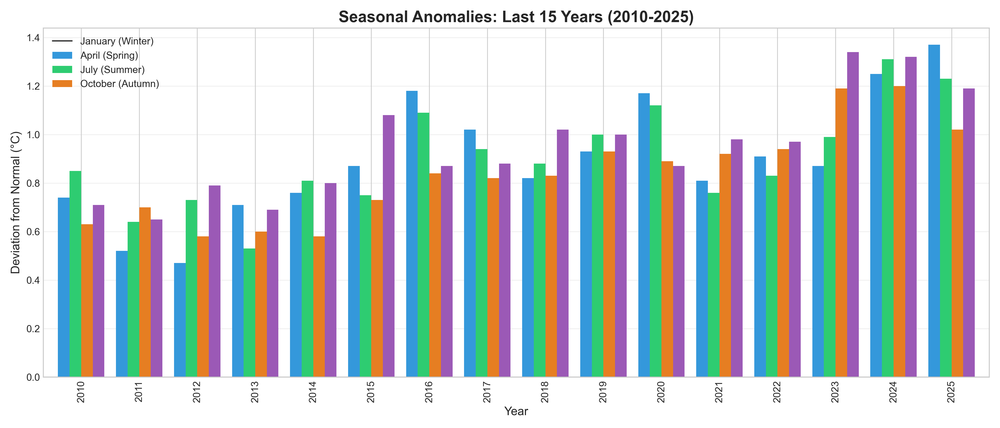
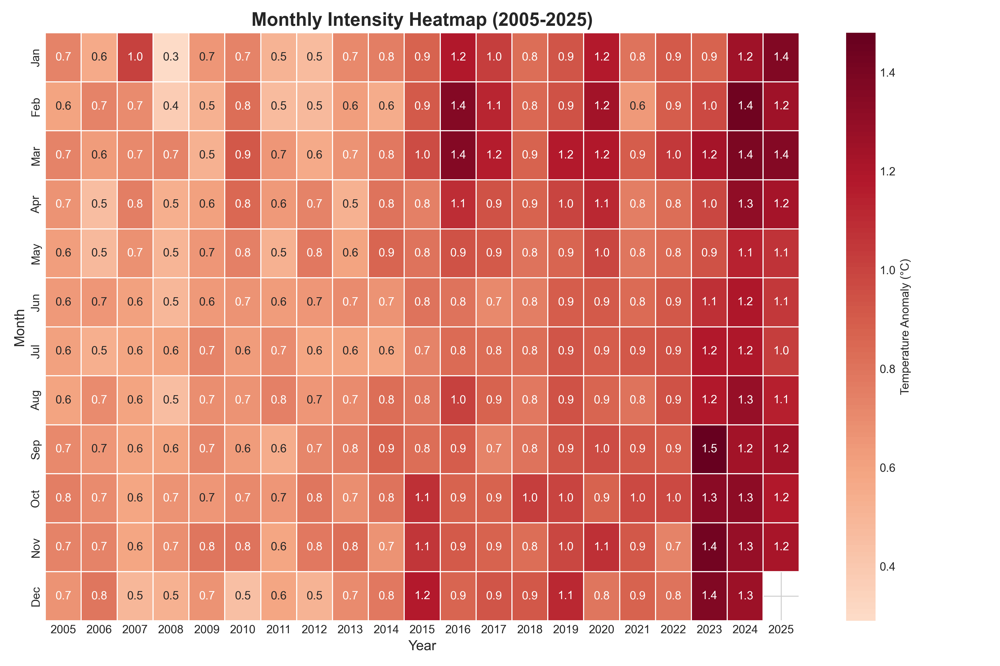
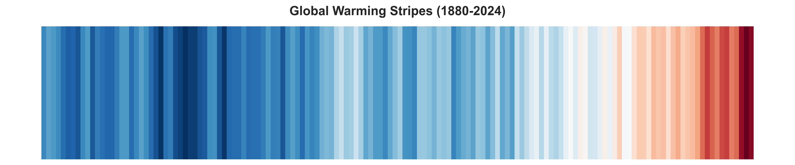

This report analyzes global temperature anomalies and CO2 emissions using the latest data from NASA and Our World in Data. Below, we break down the trends, seasonal shifts, and the undeniable correlation between human activity and warming.

Analysis: This chart tells the story of the "Greenhouse Effect." The dashed line represents CO2 emissions, which act like a blanket wrapped around the Earth. As this blanket gets thicker (more emissions), it traps more solar heat, causing the global temperature (red line) to rise. We have marked key events like the Kyoto Protocol (1997) and the Paris Agreement (2015). Despite these political efforts, the data shows that emissions and temperatures are still climbing, reaching record highs in 2023-2024.

Analysis: We often associate global warming only with hot summers, but this bar chart of the last 15 years reveals a more concerning reality. Every single bar is above the zero line (the baseline average). Notice that January (Blue) and October (Purple) bars are consistently high. This means winters are becoming milder and autumns are staying warmer for longer, disrupting ecosystems that rely on cold cycles (like hibernation and crop cycles).

Analysis: This Heatmap focuses on the last 20 years to show the intensity of the heat.
The Axes: The bottom X-axis shows the Year, and the left Y-axis shows the Month.
The Scale (Color Bar): The colors represent the anomaly from the historical average.
Light Orange (0.5°C) is significantly warm, but Dark Red (1.0°C - 1.4°C) represents extreme heat.
Conclusion: Look at the columns on the far right (2023-2024). They are almost entirely dark red / maroon. This indicates that we have entered a period where nearly every month of the year is breaking historical temperature records.

Analysis: This visualization strips away the numbers to show the raw trend from 1880 to today. Each stripe is one year. The shift from the cool blues on the left to the angry, dark reds on the right is the most direct visual evidence of our changing climate. There is no ambiguity here: the planet is getting hotter, and the process is accelerating.
Report Generated by EcoPulse Analytics Engine